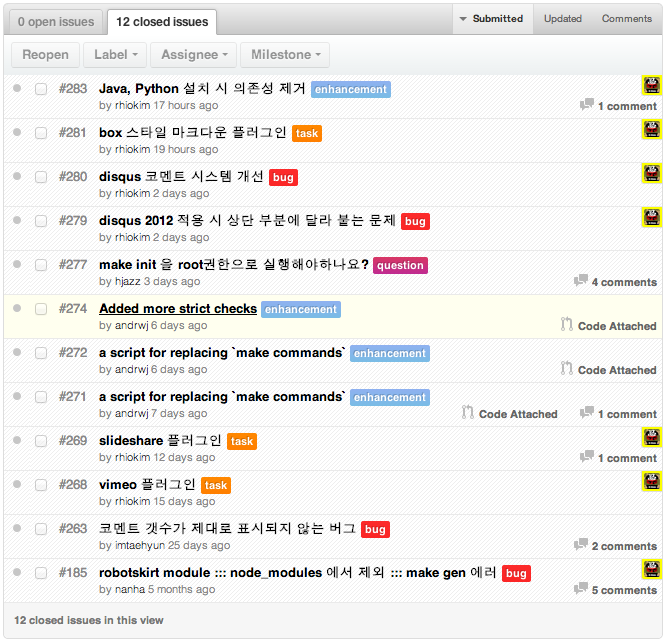

About Author

Rhio Kim
blog: http://rhio.tistory.com
twitter: @rhiokim
github: rhiokim
자바스크립트를 좋아하는 인간입니다.
- Arduino
- Node.js
- HCI
About this Article
Date Released:
Sunday, December 2 2012 6:35 PM하루프레스 v0.9.2 회고 및 릴리즈 노트
릴리즈 노트는 개인적인 회고를 위해 작성되는 포스팅입니다.
이번 릴리즈는 이곳 저곳으로 오는 피드백으로 많은 개선이 있었습니다. 그리고 11월 20일 #PlayNode 컨퍼런스에서 하루프레스 특징과 개발 노하우에 대해서 소개하게 되었습니다.
발표 내용은 아래 신규 기능에 포함하고 있습니다.
이번 v0.9.2 에서는 @andrwj 의 도움으로 리눅스 머신에서 하루프레스 설치에 발생하는 몇몇 문제를 완벽히 개선할 수 있었습니다. 리눅스의 경우에는 Ubuntu 10.04 버젼와 12.04 LTS 에서 테스트 되었습니다. 신규 설치는 메인화면 참조
업데이트 방법
$ cd /path/to/haroopress
$ git pull origin master
$ make update
그리고 최초 v0.9.2 마일스톤에서는 이미지와 관련된 확장 마크다운을 제공하려고 했으나 생각보다 쉽지 않았습니다.
그 이유는 기본 마크다운 스펙의 사용자 경험을 해치지 않고  를 개선하려다 보니 몇가지 문제에 봉착했고 이미 있는 이미지 마크업을 하루프레스 방식 [img:src width height align] 방식으로 확장하려보니 기존의 사용자 경험과 많은 에디터에서 표시할 수 없는 문제점을 갖게 되기 때문에 무작정 확장할 수 없었고 그만큼 고민하는 시간과 테스트하는 시간이 길어졌습니다.
그래서 이번에도 목표한 방향은 잠시 미루고 가장 기본적인 불편 사항을 개선하는데 초점을 마췄습니다.
이슈리스트

신규 기능
alert 확장 마크다운 플러그인 추가되었다. 이 기능은 트위터 부트스트랩을 기본으로 하는 하루프레스가 트위트 부트스트랩의 박스형태의 강조형 구문을 마크다운에서 사용하기 위해서 확장한 것이며 현재 실험 단계로 상황에 따라 기능이
deprecated될 수 있다.[alert:warning warning 스타일 박스[alert:info info 스타일 박스[alert:success success 스타일 박스[alert:error error 스타일 박스slideshare 플러그인이 추가되었다. 만약 http://www.slideshare.net/rhio.kim/nodejs-15277380 프리젠테이션을 문서에 추가하고 싶다면
[slideshare:15277380]와 같이 입력하면 된다.
- 추가적으로
[slideshare:15277380 width height]와 같이 width 와 height 어트리뷰트를 제공한다.vimeo 플러그인이 추가되었다. https://vimeo.com/54321299 동영상을 문서에 추가시키고 싶다면
[vimeo:54321299]와 같이 입력하면 된다.
- 추가적으로
[vimeo:54321299 width height color]와 같이 width, height, color 어트리뷰트를 제공한다.
이슈
향상된 점
좋았던 점
- #playnode 컨퍼런스와 Ajaxian 야머 그룹을 통해 하루프레스를 알릴 수 있어서 좋았다.
- 여러 루트를 통해 피드백이 점점 들어오고 오픈소스 프로젝트를 진행하는 맛이 나고 있다.
- 주변에 하루프레스를 직접 사용해 보며 도움을 주시는 분들이 있어서 좋다.
안좋았던 점
- 배포 실수로 인해 하루프레스 설치 오류를 맛 보시고 벌써 떠나는 분이 있으시다. :-(
좋은 아이디어나 오류, 버그들은 이슈트래커 를 통해 피드백 부탁드립니다.